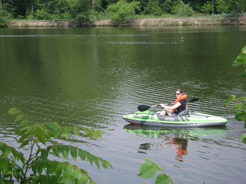
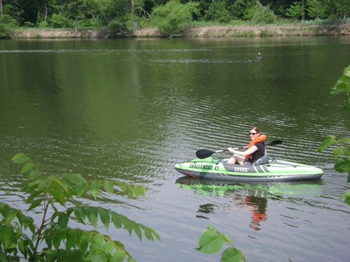

About Me
Basic Info
My name is Catherine Williams, but I prefer to go by Cat.
I was born and raised in Albuquerque, NM and after moving around for work for a while, I settled in Seattle, WA in July 2016.
Education
I have a BA in Criminology and an MBA, with concentrations in Management Information Systems and Information Assurance, both from the University of New Mexico.
In June 2019, I completed a certificate program with University of Washington for Data Analytics: Techniques for Decision Making. The courses I took were Data Analysis Essentials, Data Visualization Essentials, and Data Mining & Predictive Analytics Essentials.
Experience
My most recent employer was GE Digital where I was hired as a part of their Information Leadership Technology Program (ITLP) (now rebranded as DTLP). This is a rotational program that places you in various different technical job roles in order to expand business and technical acumen. As a part of this program, I got my first professional taste of data analysis using SiSense. I instantly fell in love with the field and since then, have been pursuing a career in data.
Staying Involved
While I was in grad school, I co-founded an organization called Network Exploitation Security Team (NEST) where I was President for 2 years. My involvement with NEST included organizing and conducting meetings, creating technical tutorials, organizing and obtaining funding for competitions and conferences, as well as networking and hosting guest speakers.
Currently, I am involved in several data meetups, such as Seattle Women in Data Science and R-Ladies Seattle. In addition, I participate in Kaggle competitions, SWD challenges, and Tidy Tuesday exercises.
Hobbies & Interests
I have a huge passion for learning more about data science techniques and best practices. I love to analyze trends using data and to apply that knowledge for making better decisions.
I really enjoy rock climbing, hiking, and camping. I like the problem solving that comes along with rock climbing and staying healthy in general.
In addition, I have a passion for reading and listening to audio books.

 
